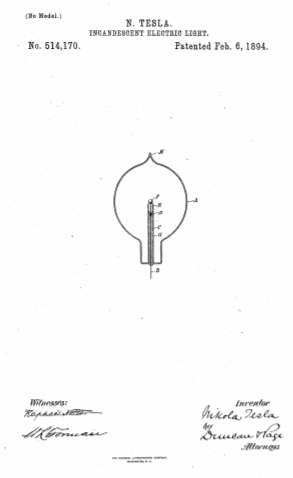

Descarga la patente original en esté enlace


Que se sepa que yo, N IKOLA T ESLA , ciudadano de los Estados Unidos, residente en Nueva York, en el condado y en el estado de Nueva York, he inventado una cierta Mejora nueva y útil en las lámparas eléctricas incandescentes, de las cuales la siguiente es una especificación, teniendo como referencia los dibujos que la acompañan y que forman parte de la misma.
Esta invención es una mejora en la clase particular de lámparas eléctricas o dispositivos de iluminación inventados por mí y para los que hasta ahora he obtenido Cartas de Patente, en particular No. 454,622, con fecha del 23 de junio de 1891.
La invención se aplica más particularmente a esa forma de lámpara en la que un pequeño cuerpo o botón de material refractario es soportado por un conductor que entra en un globo o receptor muy agotado, pero también es aplicable en general a otras formas de lámpara adaptadas para su uso con sistemas similares. en el que se emplean corrientes de muy alto potencial y gran frecuencia. He descubierto en las aplicaciones prácticas de este sistema que se produce una disipación considerable de energía de los conductores que transportan las corrientes de gran potencial y frecuencia, incluso cuando dichos conductores están completamente aislados tanto dentro como fuera de los globos de la lámpara, y el tema de mi La presente invención es un medio para prevenir tal disipación dentro de la lámpara, o más bien para confinarla a las partes particulares o parte del conductor que está diseñado para dar luz. Encuentro que puedo lograr fácilmente este objeto rodeando los conductores de entrada y de soporte con un conductor que actúa como una pantalla estática. De esta manera, el cuerpo o botón que da luz que se encuentra más allá de la influencia de la pantalla se lleva y se mantiene de manera rápida y eficiente a una incandescencia más alta por una corriente o efecto eléctrico adecuado, debido al hecho de que la acción eléctrica a la que la incandescencia es debido se limita principalmente al botón.
Una descripción de la forma ordinaria de lámpara que empleo servirá para ilustrar el principio y la naturaleza de esta mejora, y para tal descripción me refiero ahora a los dibujos que muestran dicha lámpara en la sección vertical central.
Tal dispositivo por razón de su acción electrostática reduce la pérdida de energía suministrada a esa bombilla, evitando su radiación o disipación en el espacio excepto a través del botón expuesto o desprotegido. El tubo o pantalla G está completamente aislado de los conductores dentro del globo y de todos los conductores o cuerpos externos. El globo, por medio de una bomba de aire adecuada, se descarga al grado más alto posible, o hasta que se alcanza un vacío no sorprendente. Está conectado con la bomba por el tubo habitual que está sellado en K. se agota al grado más alto posible, o hasta que se logre un vacío que no golpee. Está conectado con la bomba por el tubo habitual que está sellado en K. se agota al grado más alto posible, o hasta que se logre un vacío que no golpee. Está conectado con la bomba por el tubo habitual que está sellado en K.
La lámpara se puede fabricar de diferentes formas y de diferentes maneras, y la invención, como se puede entender fácilmente por su naturaleza y propósito descritos anteriormente, no se limita a la forma específica de lámpara que se muestra en este documento.
Lo que digo es:
Fechado el 02 de Enero de 1892.
Nikola Tesla.